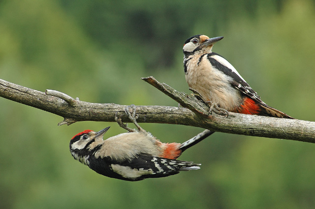

Le Pic Epeiche
Le plus répandu de nos pics, le pic épeiche est un oiseau superbe avec son étonnant plumage noir
et blanc. Le dessus du pic épeiche est principalement noir, avec de grandes taches blanches,
ovales sur les ailes et des rayures sur les rémiges. En dessous, il est blanc avec une tache
rouge écarlate sur le ventre, près de la queue. Le motif de la tête strié de noir entoure des
joues blanches. Le mâle porte également une petite tache rouge sur la nuque, absente chez la
femelle.
Comportement
Le pic épeiche est d'observation courante dans la plupart des sites boisés où l'on peut l'entendre «
tambouriner » sur les bois creux au printemps. Ses doigts (une paire en avant, une paire en arrière)
lui permettent de grimper avec aisance le long des troncs d'arbre. Il tambourine beaucoup plus
souvent que les autres pics, surtout au début du printemps, pour délimiter son territoire.
Au printemps les pics se poursuivent autour des troncs d'arbre en poussant de puissants et rauques «
rrèrèrè ». Ils délimitent leur territoire dès le mois de février par de fréquents et très rapides
tambourinage, dont la durée ne dépasse pas une demi-seconde ; comme caisse de résonance, ils
utilisent généralement des troncs d'arbre ou des branches creuses, mais aussi des poteaux, des
antennes et même des gouttières.
Comme tous les pics, le pic épeiche est spécialisé dans le martèlement des troncs et des branches
d'arbre, car sa nourriture principale consiste en larves d'insectes xylophages. Il détache d'abord
l'écorce à coups de bec latéraux, creuse ensuite des cavités dans le bois, jusqu'à 10 cm de
profondeur, afin de dénicher les larves. En hiver, le pic épeiche consomme régulièrement les graines
de pommes de pin. Il détache alors une pomme de pin puis la transporte dans son bec afin de la caler
dans une fourche d'arbre ou dans une fissure du tronc. Lorsque la fissure n'est pas assez grande
pour accueillir le cône, il l'élargit à coup de bec précis de manière à adapter le réceptacle à la
taille du cône. L'oiseau cale le cône entre son ventre et le bois de sorte que son bec est libre
pour nettoyer la cavité réceptacle. Le pic épeiche procède de la même manière avec les noix et les
noisettes qu'il trouve.
Le pic épeiche offre un bien joli spectacle dans les jardins… mais il est capable de piller les
nichoirs pour manger les oisillons.
Habitat
Les pics s'observent en forêt et en milieux ouverts où les arbres sont dispersés ; ils visitent
parfois les jardins, quand ils sont surtout peuplés d'arbres adultes. Il peut même être présent dans
les parcs au centre des villes.
Aire de répartition
Commun partout.